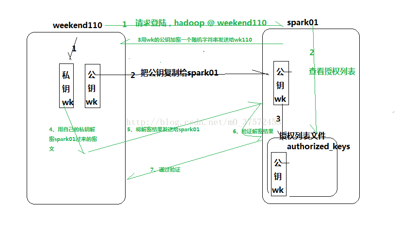

ssh 相关
1、免密登录

ssh-keygen
ssh-copy-id root@IP
PreferredAuthentications publickey,password
#PreferredAuthentications password
StrictHostKeyChecking no
ServerAliveInterval 15
ServerAliveCountMax 3
Host bosh
hostname bosh
user ubuntu
Host hl
hostname hl
user centos
Host ep
hostname 192.168.0.57
user root
port 50010
2、使用pptpd
apt-get install pptpd
pptpsetup -create pptpd -server 222.209.209.209 -username node2 -password 123456 -encrypt -start
如果断开了在机器上执行pon pptpd
常见问题
1、Write failed: Broken pipe
问题现象
用 ssh 命令连接服务器之后，如果一段时间不操作，再次进入 Terminal 时会有一段时间没有响应，然后就出现错误提示：
Write failed: Broken pipe
只能重新用 ssh 命令进行连接。
解决方法
方法一：如果您有多台服务器，不想在每台服务器上设置，只需在客户端的 ~/.ssh/ 文件夹中添加 config 文件，并添加下面的配置：
ServerAliveInterval 60
方法二：如果您有多个人管理服务器，不想在每个客户端进行设置，只需在服务器的 /etc/ssh/sshd_config 中添加如下的配置：
ClientAliveInterval 60
方法三：如果您只想让当前的 ssh 保持连接，可以使用以下的命令：
$ ssh -o ServerAliveInterval=60 user@sshserver
ssh连接超时问题解决方案： 1.修改server端的etc/ssh/sshd_config ClientAliveInterval 60 ＃server每隔60秒发送一次请求给client，然后client响应，从而保持连接 ClientAliveCountMax 3 ＃server发出请求后，客户端没有响应得次数达到3，就自动断开连接，正常情况下，client不会不响应
2.修改client端的etc/ssh/ssh_config添加以下：（在没有权限改server配置的情形下） ServerAliveInterval 60 ＃client每隔60秒发送一次请求给server，然后server响应，从而保持连接 ServerAliveCountMax 3 ＃client发出请求后，服务器端没有响应得次数达到3，就自动断开连接，正常情况下，server不会不响应